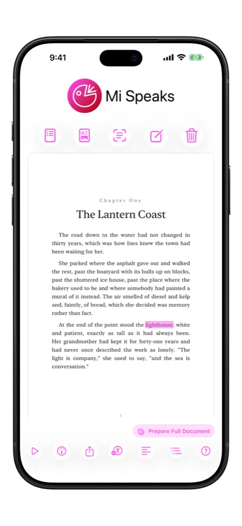
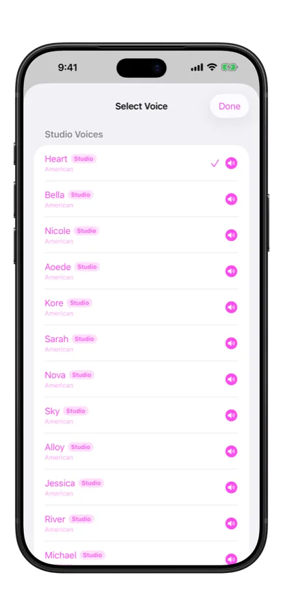
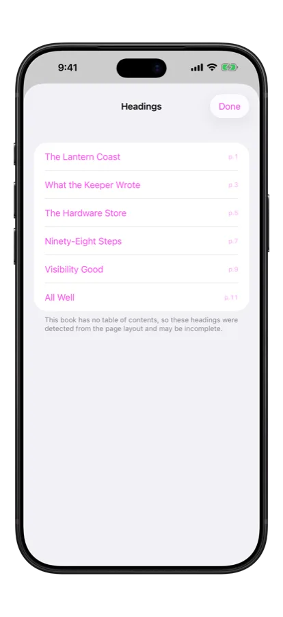
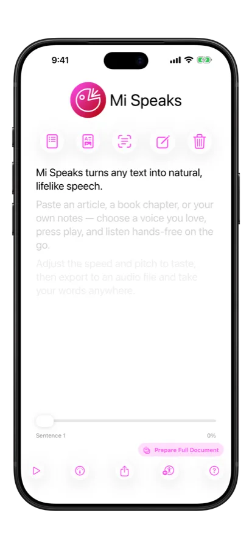
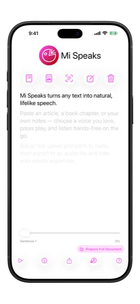
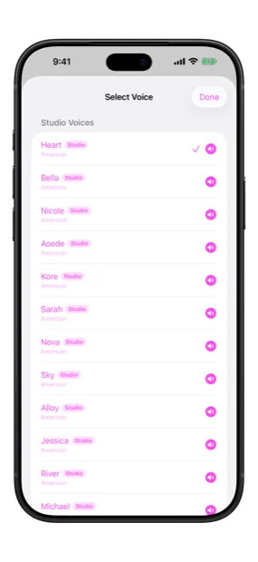
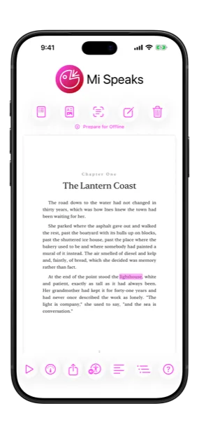
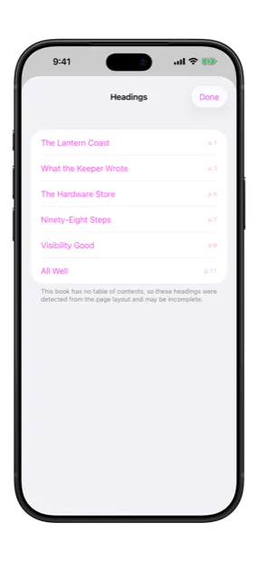
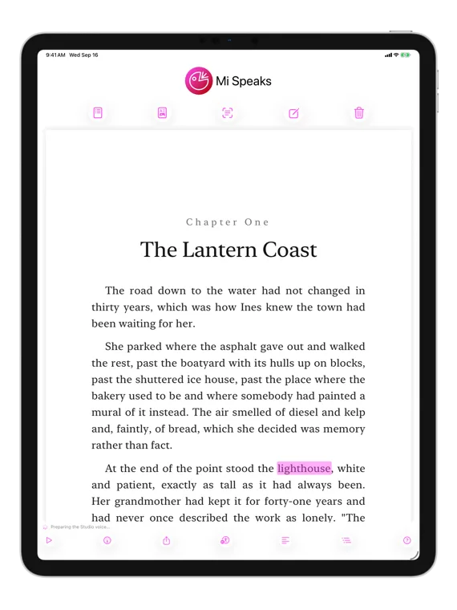
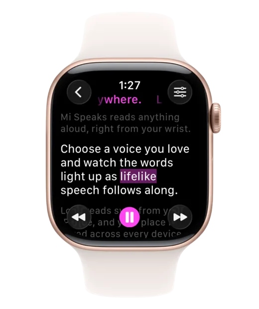

🎤 Mi Speaks
Mi Speaks reads articles, books and PDFs aloud in twenty-eight neural Studio Voices — generated entirely on your iPhone. No account, no upload, no signal. Follow along word by word, right on the page it came from.
Ready for iOS 27 / iPadOS 27 / watchOS 27
Studio Voices
Twenty-eight neural voices, generated entirely on your iPhone. Nothing is uploaded, and they work in airplane mode.
Five of them, same passage, straight off a phone. Press play.
Every clip on this page was generated on-device by the same engine that ships in the app. Studio Voices are part of Premium and need a one-time download.
Just Shipped
Neural Studio Voices, imported books on their own page, chapter navigation, and audio prepared before you need it
Twenty-eight neural voices, American and British, produced on your iPhone by an eighty-two-million-parameter model. They breathe, they phrase, and they stop sounding like a phone reading to you. Part of Premium, with a one-time download.
Import a PDF and read it where it actually lives: the real page, the real layout, with the spoken word lit up exactly where it sits. Turn it off and you are back to plain sentences — it is a mode, not a takeover.
Mi Speaks reads a PDF's own table of contents, and when a book has none it finds the headings from the page layout. A four-hundred-page import becomes a list you can move around in.
Prepare a whole document once and every sentence is already rendered to audio. It keeps playing with the screen locked, in a tunnel, on a plane — and it resumes where you left off on your iPhone, iPad or Apple Watch.
Why Choose Mi Speaks
Affordable, private text-to-speech that runs entirely on your device
Twenty-eight neural Studio Voices, plus every system voice already on your device — including Apple's Enhanced and Premium downloads and your own Personal Voice. Mi Speaks tells you which is which, so you are never handed the worst one by default.
Import text from other apps, extract text from images, and even read PDF files with powerful text recognition.
Continue listening while using other apps or when your screen is locked. Pause and resume anytime.
Follow along with highlighted text as Mi Speaks reads, making it easier to read and comprehend content.
Built-in helpful tips guide you through features and help you get the most out of Mi Speaks.
Complete privacy—all processing happens on your device. No data is collected, tracked, or sent anywhere. Affordable and privacy-focused.
Transform any written content into natural-sounding speech. Import text from images, PDFs, web pages, or type directly into the app. Mi Speaks makes all your content accessible through audio.
Perfect for reading articles while commuting, listening to documents while working out, or helping with accessibility needs.

There is no length limit on the free tier. Paste a whole article, import a whole book, and listen to all of it with any voice on your device — no trial countdown, no truncation, no paywall in the middle of a chapter. Free keeps three saved speeches, each with its own place marked.
Premium adds the twenty-eight Studio Voices, an unlimited library synced across your devices, audio export, and Turbo playback speeds. Monthly, yearly, or bought once and kept.

Every voice runs locally. Your text is never uploaded, never sent to a server to be spoken, and never needs an account — which also means Mi Speaks works the same in airplane mode as it does on Wi-Fi.
There is one real limit, and it is not the network: generating a neural voice uses the graphics processor, and iOS will not run that while an app is off screen. So tap Prepare Full Document and every sentence is rendered up front — after that there is nothing left to generate, and it plays to the end with the screen locked, in another app, or on a flight.

See It In Action
iPhone, iPad and Apple Watch — the same library, the same place in it






Got Questions?
Mi Speaks can read any written content including text you type, content from other apps, text extracted from images, and PDF files. Perfect for articles, documents, emails, books, and more.
Yes, completely. Every voice runs on the device — the system voices are already there, and the Studio Voices are a one-time download you keep. Nothing needs a connection after that. The one thing worth knowing is that generating a neural voice needs the graphics processor, which iOS only allows while the app is on screen — so Prepare Full Document renders everything up front, and then a long read plays to the end however you put your phone away.
Absolutely! Mi Speaks works with any voice installed on your device. You can download additional voices in your device's Settings app to access different languages, accents, and voice styles.
Premium adds the twenty-eight neural Studio Voices, an unlimited library of saved speeches synced across your devices via iCloud Drive, audio export to a file, and Turbo playback speeds. It is sold monthly, yearly, or as a one-time lifetime purchase. Free is not time-limited and has no length limit: any text, any system voice, three saved speeches.
Yes! Mi Speaks includes powerful text recognition that can extract text from images and PDF files, making it easy to listen to content from photos, documents, and scanned materials.
Yes! Mi Speaks highlights and follows spoken words as it reads, making it easier to follow along, improve comprehension, and learn new content.
Studio Voices are neural voices: instead of stitching together recorded fragments, an eighty-two-million-parameter model generates the waveform from the text, which is why the phrasing and breath sound human. The model and its voice packs are about 325 MB, downloaded once over Wi-Fi and then kept on the device. Nothing is sent anywhere afterwards — or during, beyond fetching the files themselves.
No. Every voice, system and Studio alike, runs on your device, and Mi Speaks has no account to sign in to. If you turn on Premium's library sync, your saved speeches travel through your own iCloud Drive — Apple's, not mine. I never see them.
Yes. Mi Speaks is on the App Store everywhere in the European Union, France included. It's available in every App Store territory Apple offers.
Security & Privacy
Comprehensive security audit completed April 2026